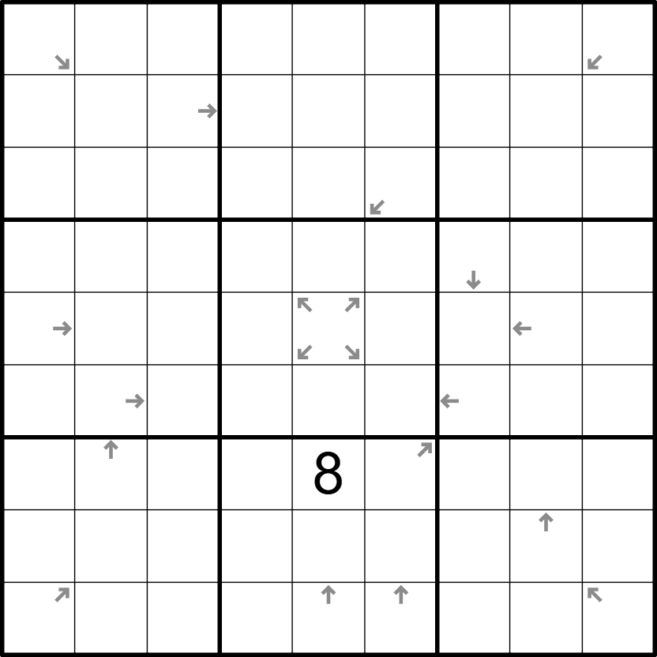

54-pijlen - 🟡

LINK
REGELS:
- Standaard sudoku: Plaats de cijfers van 1 t/m 9 eenmaal in elke rij, kolom, en 3x3 blok.
- Custom: Elke pijl wijst naar een 5 of een 4 (of allebei). Het cijfer in het vakje waar een pijl staat is gelijk aan het aantal stappen naar de dichtstbijzijnde 5 of 4 waar die pijl naar wijst (welke van de twee er eerst is).